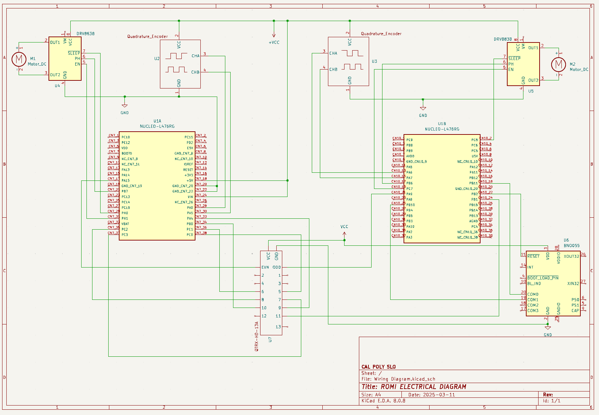

Romi Design
Required Hardware
Additional items needed for Romi include AA batteries and a USB-Mini-B cable.
Mechanical Design
exploded assembly view
Electrical Design
Pin assignments for NUCLEO interfacing with hardware were selected based on the component or sensor requirements. For instance, the BNO055 IMU utilizes I2C communication for integration, addressing, and flexibility, while the IR sensor reads ADC pins to ensure proper calibration, performance, and processing. Additionally, motors and encoders were configured to use the least amount of timers possible.
Note: The HC-05 Bluetooth module was intended to utilize UART communication, but ended up out of scope for our project.
